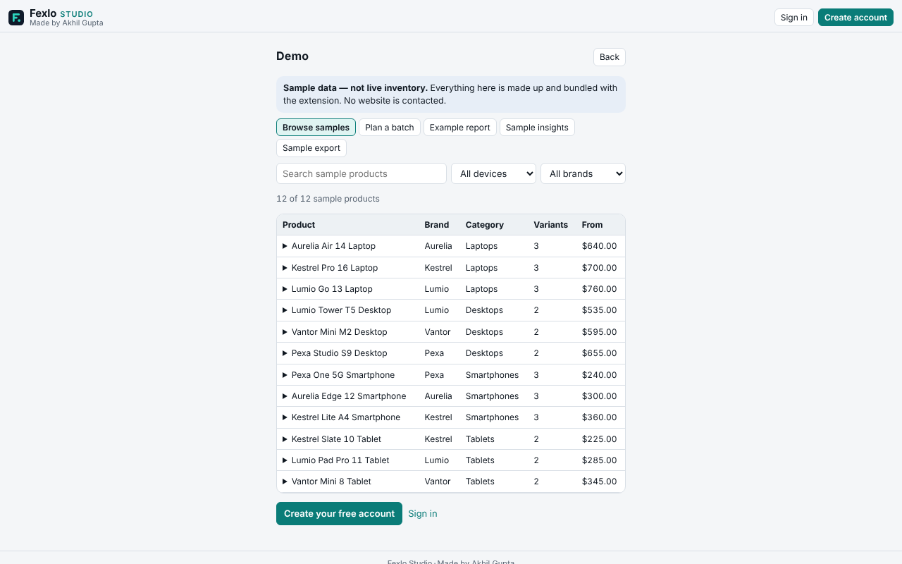
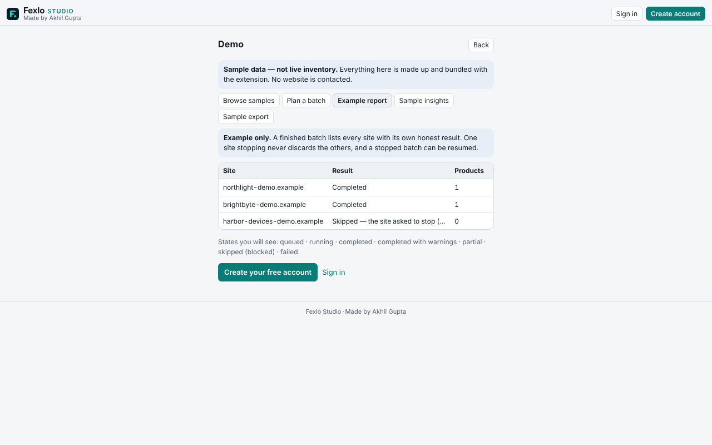

Extract
Preview and review product records from the page you are viewing.
Early Access · free for now
Extract product listings, compare saved snapshots and export usable data from supported websites, with control over which sites Fexlo accesses.
Free during Early Access. Future pricing has not been announced.

A product list or a store’s public catalogue, open in Chrome.
Extract the page you are viewing, or pick products and sites for Bulk Fetch.
Every result is labelled. Blocked, partial or skipped sites are reported, not hidden.
Keep datasets in your Library, compare snapshots, download CSV or JSON.
Collect
Preview and review product records from the page you are viewing.
Collect public catalogue data from chosen websites, with per-site progress and controls.
Organise
Keep datasets and snapshots in your browser.
Review changes between saved snapshots, where the data supports a comparison.
Understand and export
Review supported price ranges, availability and data quality from saved datasets.
Download CSV or JSON files for further analysis.

Every product and price in the sample is made up. No website is contacted.
Stores that publish a public Shopify-style product list, and best-effort reading of product lists on the page you are viewing. Not every store is supported. Read compatibility and limits first.
Your account details, sent to our account service (Supabase). Product data, website lists and filters stay in your browser. The privacy policy lists every item.
Stores that publish a public Shopify-style product list, and product lists on the page you are viewing, on a best-effort basis. Not every store is supported. See compatibility and limits.
In your browser, on your device. It is not uploaded to Fexlo’s account service. Delete it in the Library, or remove the extension.
Chrome requires permission before an extension can read a website. Fexlo asks for each site you add, one at a time, after you click.
Fexlo marks that site as blocked, stops reading it, and does not try to get past the block. Other sites in the batch continue.
Yes. Results and saved datasets export as CSV or JSON, with the source and capture time.
Free during Early Access. Future pricing has not been announced, so this is not a promise that it stays free.
Read the install and help guide, then use the support page. Include your Fexlo version (Settings, then About).
Free during Early Access. Future pricing has not been announced.